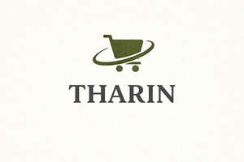

Trade Mark Journal No.2026/003 16 January 2026
UK00004313845 20 December 2025 (5,9,16,18,20,21,28,31,35)

- Class 5
- Absorbent diapers and pads of paper for pets.
- Class 9
- Dog whistles; Electronic collars for animals; Pet activity monitors; Pet GPS trackers; wearable electronic devices for pets; PC, Laptop, Server, Workstation Computer peripherals and components, Computer peripheral devices; Computer software; Alarm bells, electric; Alarms; Bags adapted for laptops; Batteries, electric; Batteries, electric, for vehicles; Batteries for lighting; Battery boxes; Battery chargers; Battery jars; Cabinets for loudspeakers; Cables, electric; Cell phone cases; Cell phone straps; Chargers for electric batteries; Computer keyboards; Computer memory devices; Connections for electric lines; Connectors [electricity]; Covers for electric outlets; Electric door bells; Gloves for protection against accidents; Hands free kits for phones; Headphones; Interfaces for computers; Junction boxes [electricity]; Junction sleeves for electric cables; Knee-pads for workers; Mice, mobile phone covers and holders; Mouse pads; Phone accessories; Plugs, sockets and other contacts [electric connections]; Sleeves for laptops; Memory, USB, SSD, HDD, Docks, Docking Stations, USB-C connectors, Cables, Connectors, Adapters, Batteries, AC Adapters, Laptop stands, Privacy Filters, all computer hardware and peripherals,USB chargers; USB flash drives; V Wire connectors [electricity]; Wires, electric; Wrist rests for use with computers, Portable speakers; Portable power supplies (rechargeable batteries), Power banks, Power packs [batteries]; Magnifying glasses; Mobile phone accessories, cases, protective covers, charging cables, and holders; Portable electronic device accessories' stands, pouches, and protective sleeves; LED flashlights, LED lamps, LED candles, LED light strips, LED lighting installations, LED light bulbs, LED lighting fixtures; Flashlights [torches], Torches for lighting, Rechargeable torches, Head torches, Pocket torches; safety and protective equipment; helmets; glasses and goggles; kitchen scales; measuring spoons; component parts and accessories of the aforesaid goods, included in this class.
- Class 16
- Disposable dog waste bags; biodegradable bags for pet waste; Paper, cardboard and goods made from these materials, not included in other classes, in particular paper and cardboard for packaging; printed matter; bookbinding material; photographs; stationery; adhesives for stationery or household purposes; paint brushes; plastic materials for packaging (not included in other classes). Food-wrapping paper; Food wrappers; Food wrapping plastic film; Films for wrapping foodstuffs; Bags of paper for foodstuffs; Paperboard trays for packaging food; Sandwich bags; Carrier bags; Paper bags; Sandwich bags [paper]; Cardboard container for food; Paper bags for food. Paper; Toilet paper; Toilet tissues of paper; Toilet rolls; Napkin paper; Kitchen rolls [paper]; Tablecloths of paper; Dinner mats of paper; Table napkins of paper; Towels of paper for cleaning purposes; Napkins made of paper for household use; Disposable napkins; Napkins of cellulose for household purposes; Paper; Paper hand-towels; Napkin paper; Paper napkins; Napkins of paper; Toilet tissue; Serviettes of paper; Paper serviettes; Paper wipes; Tissue paper; Kitchen rolls [paper]; Face towels of paper; Paper face towels; Parchment paper; Paper bags; Bags of paper; Recycled paper; Toilet rolls; Paper tissues; Toilet tissues; Napkins of paper; Table napkins of paper; Paper bags and sacks; Paper for bags and sacks; Paper bags for packaging; Sandwich bags [paper]; Paper lunch bags; Paper shopping bags; Shopping bags of paper or plastic; Bags made of paper; Carrier bags of paper or plastic; Refuse bags of paper; Garbage bags of paper or of plastics; Paper boxes; Paper sacks; Bags [envelopes, pouches] of paper or plastics, for packaging; Plastic bags for packing; Paper pouches for packaging; Plastic shopping bags; Plastic sandwich bags; Plastic bags for wrapping; Plastic foil for wrapping; Plastic bags for wrapping and packaging; Plastic foil for packaging; Plastic bags for packaging; Greaseproof paper; Paper wipes for cleaning; Towels of paper for cleaning purposes; Paper towels; Towels of paper; Hand towels of paper; Paper hand towels; Paper washcloths; Kitchen paper; Hygienic paper; Toilet tissue made of paper; Cardboard pizza boxes; Cardboard cake boxes; Cardboard boxes; Baking paper; Baking parchment; Paper knives; Paper handkerchiefs.
- Class 18
- Leather and imitations of leather; animal skins and hides; luggage and carrying bags; umbrellas and parasols; walking sticks; whips, harness and saddlery; collars, leashes and clothing for animals; Pet clothing; Garments for pets; Animal apparel; Pet collars and leads; coats and clothing for animals; back packs and bags for animals; Dog collars, Dog leashes, Collars for cats, Collars for pets; Rawhide chews for dogs; Pet hair bows; Dog clothing; Travel bags; packing cubes; toiletry bags sold empty; luggage organizers; travel pouches for carrying personal items; parts and fittings for all the aforesaid goods.
- Class 20
- Furniture, mirrors, picture frames; containers, not of metal, for storage or transport; unworked or semi-worked bone, horn, whalebone or mother-of-pearl; shells; meerschaum; yellow amber; Ornaments made of plastic, resin, wood or wax; animal bedding; hard beds and baskets; upholstered mats, cushions, mattresses and bedding, all for household pets; kennels, hutches and carriers for animals; scratching posts and pads; pet doors and cat flaps (non-metal); pet runs; nesting boxes for household pets; parts and fittings for all the aforesaid goods.
- Class 21
- Cages for household pets; Pet feeding bowls; Pet drinking bowls; Brushes for grooming pet animals; Pet grooming glove, brushes and combs; cages and boxes for household pets; Pet feeding bowls; Pet drinking bowls; Brushes for grooming pet animals; Pet grooming glovefeeding troughs and bowls for household pets; litter boxes and trays for pets; grooming apparatus for animals; glassware, pottery, porcelain and earthenware; utensils for picking up animal excrement; cat litter scoops; pvc feeding mat; grooming aids and toothbrushes; combs; brushes; sponges; Animal bristles [brushware]; cleaning instruments and cloths; Litter trays for pets; litter trays, litter scoops; flea combs; plastic containers for dispensing food and drink to pets; ornaments made of glass, porcelain; parts and fittings for all the aforesaid goods; Household containers for storing pet food; Household or kitchen utensils and containers; Combs and sponges; Brushes (except paint brushes); Articles for cleaning purposes; Steelwool; Unworked or semi-worked glass (except glass used in building); Glassware, porcelain and earthenware not included in other classes; Abrasive pads for kitchen purposes; Abrasive sponges for scrubbing the skin; Aerosol dispensers, not for medical purposes; Babies' potties; Baby bath tubs; Baby baths; Baby baths, portable; Baby bathtubs; Back scratchers; Bakers' tinware; Bakeware; Bakeware [not toys]; Baking dishes; Baking mats; Baking tins; Baking sheets of common metal; Baking trays made of aluminium; Baking utensils; Barbecue mitts; Basins; Bath brushes; Bath sponges; Basting spoons; Basting brushes; Baskets for domestic use; Baths (Baby -), portable; Bathtub brushes; Beaters, non-electric; Battery operated lint removers; Beaters (Carpet -), not being machines; Beer mugs; Bins (Dust -); Bins for household refuse; Baskets for domestic use; Beaters, non-electric; Beer mugs; Blenders, non-electric, for household purposes; Boot jacks; Boot trees [stretchers]; Bottle gourds; Bottle openers; Bottles; Boxes for dispensing paper towels; Boxes of glass; Bread baskets, domestic; Bread bins; Bread boards; Brooms; Brush goods; Brushes; Brushes for cleaning tanks and containers; Brushes for footwear; Buckets made of woven fabrics; Buckskin for cleaning; Busts of porcelain, ceramic, earthenware or glass; Butter-dish covers; Butter dishes; Buttonhooks; Cabarets [trays]; Cake molds [moulds]; Candle extinguishers; Candle rings; Candlesticks; Candy boxes; Carboys; Carpet beaters, not being machines; Carpet sweepers; Cauldrons; Ceramics for household purposes; Chamber pots; Cheese-dish covers; China ornaments; Chopsticks; Cinder sifters [household utensils]; Cleaning instruments, hand-operated; Cleaning tow; Closures for pot lids; Cloth for washing floors; Clothes-pegs; Clothes racks, for drying; Clothing stretchers; Coasters, not of paper and other than table linen; Cocktail stirrers; Coffee filters, non-electric; Coffee grinders, hand-operated; Coffee percolators, non-electric; Coffee services [tableware]; Coffeepots, non-electric; Coin banks (Piggy banks); Coasters, not of paper or textile; Comb cases; Combs; Combs for animals; Confectioners' decorating bags [pastry bags]; Containers for household or kitchen use; Cookery molds [moulds]; Cookie [biscuit] cutters; Cookie jars; Cooking pins of metal; Cooking pot sets; Cooking pots; Cooking utensils, non-electric; Corkscrews; Cosmetic utensils; Cotton waste for cleaning; Crockery; Cruet sets for oil and vinegar; Cruets; Crumb trays; Crystal [glassware]; Cups; Cups of paper or plastic; Currycombs; Cutting boards for the kitchen; Decanters; Deep fryers, non-electric; Deodorising apparatus for personal use; Dish covers; Dishes; Dishwashing brushes; Disposable table plates; Drinking glasses; Drinking horns; Drinking straws; Drinking troughs; Drinking vessels; Drying racks for washing; Dustbins; Dusting apparatus, non-electric; Dusting cloths [rags]; Earthenware saucepans; Egg cups; Electric brushes, except parts of machines; Electric combs; Electric devices for attracting and killing insects; Enamelled glass; Epergnes; Eyebrow brushes; Feather-dusters; Fitted picnic baskets, including dishes; Flasks; Flat-iron stands; Floss for dental purposes; Flower-pot covers, not of paper; Flower pots; Fly swatters; Foil food containers; Food cooling devices, containing heat exchange fluids, for household purposes; Food storage containers; Fruit cups; Fruit presses, non-electric, for household purposes; Frying pans; Funnels; Furniture dusters; Gardening gloves; Garlic presses [kitchen utensils]; Guards for cooking; splatter guards for cooking; Glass bowls; Glass caps; Glass flasks [containers]; Glass jars [carboys]; Glove stretchers; Gloves for household purposes; Glue-pots; Graters [household utensils]; Grill supports; Grills [cooking utensils]; Hair for brushes; Hand tools for the application of cosmetics; Heat-insulated containers; Heat insulated containers for beverages; Heaters for feeding bottles, non-electric; Holders for flowers and plants [flower arranging]; Horse brushes; Hot pots, not electrically heated; Ice cube molds; Ice pails; Insect traps; Ironing board covers, shaped; Ironing boards; Isothermic bags; Jugs; Kettles, non-electric; Kitchen containers; Kitchen mixers, non-electric; Kitchen utensils; Knife rests for the table; Lamp-glass brushes; Large-toothed combs for the hair; Lazy susans; Liqueur sets; Lunch boxes; Majolica; Make-up removing appliances; Menu card holders; Mess-tins; Mills for domestic purposes, hand-operated; Mixing spoons [kitchen utensils]; Molds [kitchen utensils]; Mop wringers; Mops; Mosaics of glass, not for building; Mouse traps; Mugs; Nail brushes; Napkin holders; Napkin rings; Nest eggs, artificial; Non-electric portable coldboxes; Noodle machines, hand-operated; Opal glass; Opaline glass; Pails; Painted glassware; Paper cups; Coffee cups; Paper baking cups; Cups of paper or plastic; Cardboard cups; Plastic cups; Drinking cups; Fruit cups; Paper plates; Plates (Paper -); Dispensers for paper hand towels; Cup lids; Sandwich boxes; Bread boxes; Pots; Plastic plates; Biodegradable plates; Plates; Compostable plates.Paper plates; Pastry cutters; Pepper mills, hand-operated; Pepper pots; Perfume burners; Perfume sprayers; Pie servers; Piggy banks; Plastic water bottles; Plates to prevent milk boiling over; Plungers for clearing blocked drains; Polishing apparatus and machines, for household purposes, non-electric; Polishing gloves; Polishing leather; Polishing materials for making shiny, except preparations, paper and stone; Porcelain ware; Portable beverage container holders; Pot lids; Pots; Pottery; Poultry rings; Powder compacts; Powder puffs; Powdered glass for decoration; Rags for cleaning; Refrigerating bottles; Rings for birds; Rolling pins, domestic; Roses for watering cans; Salad bowls; Salt cellars; Sandwich boxes; Saucepan scourers of metal; Saucers; Scoops [tableware]; Scouring pads; Scrubbing brushes; Services [dishes]; Shakers; Shaving brush stands; Shaving brushes; Shoe horns; Shoe trees [stretchers]; Sieves [household utensils]; Sifters [household utensils]; Signboards of porcelain or glass; Siphons for carbonated water; Smoke absorbers for household purposes; Soap boxes; Soap dispensers; Soap holders; Soup bowls; Spatulas [kitchen utensils]; Spice sets; Sponge holders; Sponges for household purposes; Sponges; Scrub sponges; Cleaning sponges; Cosmetic sponges; Kitchen sponges; Scouring sponges; Dishwashing brushes; Scrubbing brushes; Microfiber cloths for cleaning; Dusting cloths; Mops; Floor cloths; Polishing cloths; Cleaning cloth; Mop heads; Hair brushes; Dusting gloves; Oven gloves; Rubber gloves for domestic use; Electric lint removers; Non-electric lint removers; Lint brushes; Lint rollers; Cosmetics brushes; Containers for cosmetics; Reusable ice cubes; Cool bags; Cold packs used to keep food and drink cold; Drinks containers; Portable beverage dispensers. Spouts; Sprinklers; Statues of porcelain, ceramic, earthenware or glass; Statuettes of porcelain, ceramic, earthenware or glass; Steel wool for cleaning; Stew-pans; Strainers; Strainers for household purposes; Sugar bowls; Syringes for watering flowers and plants; Table plates; Tableware, other than knives, forks and spoons; Tankards; Tar-brushes, long handled; Tea balls; Tea caddies; Tea cosies; Tea services [tableware]; Tea strainers; Teapots; Thermally insulated containers for food; Tie presses; Toilet brushes; Toilet cases; Toilet paper dispensers; Toilet paper holders; Toilet sponges; Toilet utensils; Toothbrushes; Toothbrushes, electric; Toothpick holders; Toothpicks; Towel rails and rings; Travel mugs; Trays for domestic purposes; Trays for domestic purposes, of paper; Trivets [table utensils]; Trouser presses; Urns; Utensils for household purposes; Utensils for cosmetic purposes; Vacuum bottles; Vases; Vegetable dishes; Vessels of metal for making ices and iced drinks; Waffle irons, non-electric; Washing boards; Washtubs; Waste paper baskets; Water apparatus for cleaning teeth and gums; Watering cans; Watering devices; Wax-polishing appliances, non-electric, for shoes; Whisks, non-electric, for household purposes; Window-boxes; Wine tasters [siphons].
- Class 28
- Games, toys and playthings; video game apparatus; gymnastic and sporting articles; decorations for Christmas trees; Party poppers; Party novelties; Balloons; Confetti; Toys; Toys, games, and playthings; Frisbee; Tennis balls; footballs; Plush toys; Inflatable toys; Soft toys, Stuffed toys; Wind-up toys; Toys for pets; toys and games for pets; Toys for cats; Toys for dogs; toys for domestic pets; Toys and playthings for pet animals; Toys for babies; Infant development toys; Fidget toys; Plastic toys; Toys for animals; Toys, games and playthings for pet animals; Pet toys; Wooden toys; Model cars [toys or playthings]; Educational toys; Outdoor toys; Bath toys; Whistles [toys]; Sketching toys; Craft model kits; Toy model hobby craft kits; Craft toys sold in kit form; Drawing toys; Toy LED light sticks; Sports equipment; Play mats incorporating infant toys [playthings]; Christmas tree ornaments; Christmas tree [synthetic]; Christmas tree skirts; Christmas tree decorations; Christmas tree stands; Christmas trees (Artificial -); Toy Christmas trees; Artificial Christmas trees; Musical Christmas tree ornaments; Ornaments for Christmas trees; Christmas tree stand covers; Christmas trees (Ornaments for -), except illumination articles and confectionery; Christmas tree decorations [other than edible or for illumination]; Decorations and ornaments for Christmas trees; Artificial snow for Christmas trees; Candle holders for Christmas trees; Christmas trees of synthetic material; Tinsel for decorating Christmas trees; Christmas trees of synthetic materials; Snow for Christmas trees (Artificial -); Non-edible christmas tree ornaments; Decorations for Christmas trees; Bells for Christmas trees.
- Class 31
- Pet care foodstuffs and beverages for animals; pet treats; pet snacks; cereals and grains for animal consumption; edible chews for animals; nutritional supplements for animals (non-medicated); dry animal foods; dry animal foods sold in bulk; tinned dog food; puppy food; nutritionally complete dry dog food; rawhide chews; meat and chocolate based animal treats, in loose and packet form; loose biscuits for animals; nutritional foods for older/less active animals; tinned cat foods; nutritionally complete dry cat food in pellet form; animal litter; small animal bedding; small animal treats. .
- Class 35
- Import and export services; Retail, mail order, electronic and on-line retail services connected with the sale of goods for pets, pet care food stuffs and pet care products, pet accessories, pet care kits consisting of grooming tools and accessories, and other grooming preparations, medicated shampoos, flea control products, flea collars, flea sprays, flea powders, containers of cardboard for the transportation of animals and pets, printed instructional materials relating to animals and pets, including pet care, articles made from leather and/or imitation leather, pet collars and leads, coats and clothing for animals, back packs and bags for animals, animal bedding, hard beds and baskets, upholstered mats, cushions, mattresses and bedding, all for household pets, kennels, hutches and carriers for animals, scratching posts and pads, pet doors and cat flaps (non-metal), pet runs, grooming aids and toothbrushes, food feeding troughs, combs, brushes, sponges, animal cages, parts and fittings for all the aforesaid goods, household utensils and containers, cleaning instruments and cloths, litter trays, litter scoops, flea combs, games, toys and playthings for animals, foodstuffs and beverages for animals, pet treats, pet snacks, cereals and grains for animal consumption, edible chews for animals, nutritional supplements for animals (non-medicated), dry animal foods, dry animal foods sold in bulk, tinned dog food, puppy food, nutritionally complete dry dog food, rawhide chews, meat and chocolate based animal treats, in loose and packet form, loose biscuits for animals, nutritional foods for older/less active animals, tinned cat foods, nutritionally complete dry cat food in pellet form, small animal bedding, animal litter, disposable dog waste bags, biodegradable bags for pet waste, dog collars, pet feeding bowls, pet harnesses, pet toys, pet beds, pet feeding stands, pet crates, dog water bottles, wearable electronic devices for pets, cushions for animals, pet furniture, mattresses for pets, cat and dog carrier bag, pet car seats, Compacts containing make-up, Cosmetics, Drain cleaning preparations, Cleaning fluids, Electric bag sealers, Vacuum bags, Sewing machines, Screwdrivers [hand tools], Hand tools, hand-operated, Hand tools and implements (hand operated), Household or kitchen utensils and containers, Combs and sponges, Brushes (except paint brushes), Articles for cleaning purpose, Portable speakers, Pocket-sized electronic calculators, Portable power supplies (rechargeable batteries), Power banks, Power packs [batteries], Magnifying glasses, Portable electric heaters, Shower heads, LED flashlights, LED lamps, LED candles, LED light strips, LED lighting installations, LED light bulbs, LED lighting fixtures, Flashlights [torches], Torches for lighting, Rechargeable torches, Head torches, Pocket torches, Glow sticks for lighting, Heaters, Portable electric fans, Dehumidifiers for household use, Pouches (Disposable sterilization -), Hand warmers for personal use, Socks, electrically heated, Personal compact mirrors, Travel pillows, Hand-held folding fans, Hand-held flat fans, Guards for cooking, splatter guards for cooking, Portable beverage container holders, Coin banks (Piggy banks), Coasters, not of paper or textile, Pet feeding bowls, Pet drinking bowls, Brushes for grooming pet animals, Pet grooming glove, Travel mugs, Travel pillows, Hand tools for the application of cosmetics, Food storage containers, Lunchboxes, Sandwich boxes, Household or kitchen utensils and containers, Combs and sponges, Brushes (except paint brushes), Articles for cleaning purpose, Utensils for cosmetic purposes, Sponges, Scrub sponges, Cleaning sponges, Cosmetic sponges, Kitchen sponges, Scouring sponges, Dishwashing brushes, Scrubbing brushes, Microfiber cloths for cleaning, Dusting cloths, Mops, Floor cloths, Polishing cloths, Cleaning cloth, Mop heads, Hair brushes, Dusting gloves, Oven gloves, Rubber gloves for domestic use, Electric lint removers, Non-electric lint removers, Lint brushes, Lint rollers, Cosmetics brushes, Containers for cosmetics, Reusable ice cubes, Cool bags, Cold packs used to keep food and drink cold, Drinks containers, Portable beverage dispensers, Sewing kits, Toys, Toys, games, and playthings, Plush toys, Inflatable toys, Stuffed toys, Wind-up toys, Toys for pets, Toys for babies, Fidget toys, Plastic toys, Toys for animals, Toys, games and playthings for pet animals, Pet toys, Wooden toys, Model cars [toys or playthings], Educational toys, Outdoor toys, Bath toys, Whistles [toys], Sketching toys, Craft model kits, Toy model hobby craft kits, Craft toys sold in kit form, Drawing toys, Toy LED light sticks, Sports equipment.
THARIN HOLDINGS LTD